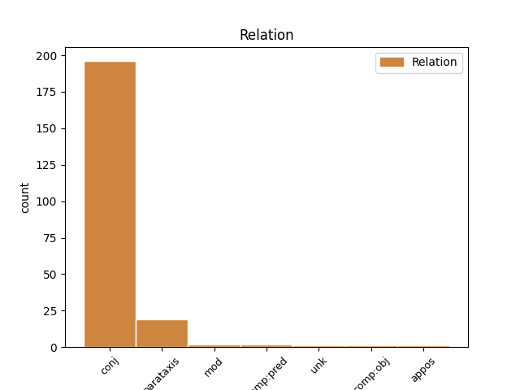
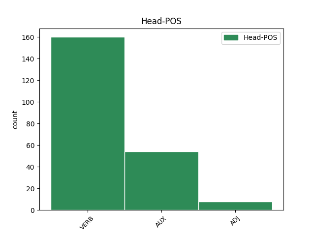
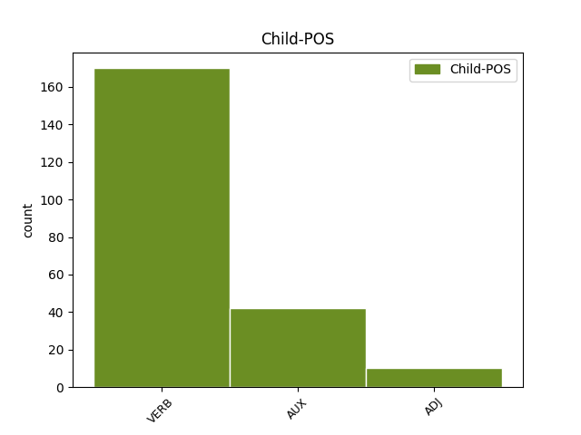

Distribution of features within this leaf



Agreement Rules sorted by frequency.
- When the dependent token is the conjunct(conj) of the head token, and the head token is VERB and the dependent token is VERB.
1 Občanská _ _ _ _ 0 _ _ _
2 sdružení _ _ _ _ 0 _ _ _
3 , _ _ _ _ 0 _ _ _
4 jejich _ _ _ _ 0 _ _ _
5 organizační _ _ _ _ 0 _ _ _
6 jednotky _ _ _ _ 0 _ _ _
7 , _ _ _ _ 0 _ _ _
8 které _ _ _ _ 0 _ _ _
9 mají _ _ _ _ 0 _ _ _
10 právní _ _ _ _ 0 _ _ _
11 subjektivitu _ _ _ _ 0 _ _ _
12 , _ _ _ _ 0 _ _ _
13 církve _ _ _ _ 0 _ _ _
14 a _ _ _ _ 0 _ _ _
15 náboženské _ _ _ _ 0 _ _ _
16 společnosti _ _ _ _ 0 _ _ _
17 nebo _ _ _ _ 0 _ _ _
18 církevní _ _ _ _ 0 _ _ _
19 instituce _ _ _ _ 0 _ _ _
20 , _ _ _ _ 0 _ _ _
21 které _ _ _ _ 0 _ _ _
22 jsou _ _ _ _ 0 _ _ _
23 církevní _ _ _ _ 0 _ _ _
24 právnickou _ _ _ _ 0 _ _ _
25 osobou _ _ _ _ 0 _ _ _
26 , _ _ _ _ 0 _ _ _
27 a _ _ _ _ 0 _ _ _
28 honební _ _ _ _ 0 _ _ _
29 společenstva _ _ _ _ 0 _ _ _
30 mohou moci VERB VB-P---3P-AA--1 Mood=Ind|Number=Plur|Person=3|Polarity=Pos|Tense=Pres|VerbForm=Fin|Voice=Act 0 _ _ _
31 vést _ _ _ _ 0 _ _ _
32 účetnictví _ _ _ _ 0 _ _ _
33 podle _ _ _ _ 0 _ _ _
34 zákona_č._563/1991_Sb. _ _ _ _ 0 _ _ _
35 , _ _ _ _ 0 _ _ _
36 o _ _ _ _ 0 _ _ _
37 účetnictví _ _ _ _ 0 _ _ _
38 , _ _ _ _ 0 _ _ _
39 ve _ _ _ _ 0 _ _ _
40 znění _ _ _ _ 0 _ _ _
41 zákona_č._117/1994_Sb.,_zákona_č._227/1997_Sb.,_zákona_č._492/2000_Sb.,_zákona_č._353/2001_Sb._a_zákona_č._437/2003_Sb. _ _ _ _ 0 _ _ _
42 , _ _ _ _ 0 _ _ _
43 pokud _ _ _ _ 0 _ _ _
44 jejich _ _ _ _ 0 _ _ _
45 celkové _ _ _ _ 0 _ _ _
46 příjmy _ _ _ _ 0 _ _ _
47 za _ _ _ _ 0 _ _ _
48 poslední _ _ _ _ 0 _ _ _
49 uzavřené _ _ _ _ 0 _ _ _
50 účetní _ _ _ _ 0 _ _ _
51 období _ _ _ _ 0 _ _ _
52 nepřesáhnou _ _ _ _ 0 _ _ _
53 3000000 _ _ _ _ 0 _ _ _
54 Kč _ _ _ _ 0 _ _ _
55 ; _ _ _ _ 0 _ _ _
56 přitom _ _ _ _ 0 _ _ _
57 se _ _ _ _ 0 _ _ _
58 na _ _ _ _ 0 _ _ _
59 ně _ _ _ _ 0 _ _ _
60 vztahují vztahovat VERB VB-P---3P-AA--- Mood=Ind|Number=Plur|Person=3|Polarity=Pos|Tense=Pres|VerbForm=Fin|Voice=Act 30 conj _ _
61 ustanovení _ _ _ _ 0 _ _ _
62 zákona_č._563/1991_Sb. _ _ _ _ 0 _ _ _
63 , _ _ _ _ 0 _ _ _
64 o _ _ _ _ 0 _ _ _
65 účetnictví _ _ _ _ 0 _ _ _
66 , _ _ _ _ 0 _ _ _
67 a _ _ _ _ 0 _ _ _
68 jeho _ _ _ _ 0 _ _ _
69 prováděcích _ _ _ _ 0 _ _ _
70 právních _ _ _ _ 0 _ _ _
71 předpisů _ _ _ _ 0 _ _ _
72 , _ _ _ _ 0 _ _ _
73 která _ _ _ _ 0 _ _ _
74 upravují _ _ _ _ 0 _ _ _
75 účtování _ _ _ _ 0 _ _ _
76 v _ _ _ _ 0 _ _ _
77 soustavě _ _ _ _ 0 _ _ _
78 jednoduchého _ _ _ _ 0 _ _ _
79 účetnictví _ _ _ _ 0 _ _ _
80 , _ _ _ _ 0 _ _ _
81 ve _ _ _ _ 0 _ _ _
82 znění _ _ _ _ 0 _ _ _
83 účinném _ _ _ _ 0 _ _ _
84 k _ _ _ _ 0 _ _ _
85 31 _ _ _ _ 0 _ _ _
86 . _ _ _ _ 0 _ _ _
87 prosinci _ _ _ _ 0 _ _ _
88 2003 _ _ _ _ 0 _ _ _
89 . _ _ _ _ 0 _ _ _
1 (5) _ _ _ _ 0 _ _ _
2 Pokud _ _ _ _ 0 _ _ _
3 cenné _ _ _ _ 0 _ _ _
4 papíry _ _ _ _ 0 _ _ _
5 emitované _ _ _ _ 0 _ _ _
6 účetní _ _ _ _ 0 _ _ _
7 jednotkou _ _ _ _ 0 _ _ _
8 podle _ _ _ _ 0 _ _ _
9 odstavce _ _ _ _ 0 _ _ _
10 1 _ _ _ _ 0 _ _ _
11 již _ _ _ _ 0 _ _ _
12 nejsou být AUX VB-P---3P-NA--- Mood=Ind|Number=Plur|Person=3|Polarity=Neg|Tense=Pres|VerbForm=Fin|Voice=Act 0 _ _ _
13 obchodovány _ _ _ _ 0 _ _ _
14 na _ _ _ _ 0 _ _ _
15 žádném _ _ _ _ 0 _ _ _
16 z _ _ _ _ 0 _ _ _
17 evropských _ _ _ _ 0 _ _ _
18 regulovaných _ _ _ _ 0 _ _ _
19 trhů _ _ _ _ 0 _ _ _
20 a _ _ _ _ 0 _ _ _
21 nejvyšší _ _ _ _ 0 _ _ _
22 orgán _ _ _ _ 0 _ _ _
23 účetní _ _ _ _ 0 _ _ _
24 jednotky _ _ _ _ 0 _ _ _
25 rozhodne rozhodnout VERB VB-S---3P-AA--- Mood=Ind|Number=Sing|Person=3|Polarity=Pos|Tense=Pres|VerbForm=Fin|Voice=Act 12 conj _ _
26 do _ _ _ _ 0 _ _ _
27 konce _ _ _ _ 0 _ _ _
28 účetního _ _ _ _ 0 _ _ _
29 období _ _ _ _ 0 _ _ _
30 , _ _ _ _ 0 _ _ _
31 v _ _ _ _ 0 _ _ _
32 němž _ _ _ _ 0 _ _ _
33 cenné _ _ _ _ 0 _ _ _
34 papíry _ _ _ _ 0 _ _ _
35 přestaly _ _ _ _ 0 _ _ _
36 být _ _ _ _ 0 _ _ _
37 takto _ _ _ _ 0 _ _ _
38 obchodovány _ _ _ _ 0 _ _ _
39 , _ _ _ _ 0 _ _ _
40 o _ _ _ _ 0 _ _ _
41 záměru _ _ _ _ 0 _ _ _
42 požádat _ _ _ _ 0 _ _ _
43 nejdéle _ _ _ _ 0 _ _ _
44 do _ _ _ _ 0 _ _ _
45 tří _ _ _ _ 0 _ _ _
46 let _ _ _ _ 0 _ _ _
47 od _ _ _ _ 0 _ _ _
48 okamžiku _ _ _ _ 0 _ _ _
49 , _ _ _ _ 0 _ _ _
50 kdy _ _ _ _ 0 _ _ _
51 cenné _ _ _ _ 0 _ _ _
52 papíry _ _ _ _ 0 _ _ _
53 přestaly _ _ _ _ 0 _ _ _
54 být _ _ _ _ 0 _ _ _
55 takto _ _ _ _ 0 _ _ _
56 obchodovány _ _ _ _ 0 _ _ _
57 , _ _ _ _ 0 _ _ _
58 o _ _ _ _ 0 _ _ _
59 přijetí _ _ _ _ 0 _ _ _
60 nového _ _ _ _ 0 _ _ _
61 cenného _ _ _ _ 0 _ _ _
62 papíru _ _ _ _ 0 _ _ _
63 k _ _ _ _ 0 _ _ _
64 obchodování _ _ _ _ 0 _ _ _
65 na _ _ _ _ 0 _ _ _
66 evropském _ _ _ _ 0 _ _ _
67 regulovaném _ _ _ _ 0 _ _ _
68 trhu _ _ _ _ 0 _ _ _
69 , _ _ _ _ 0 _ _ _
70 může _ _ _ _ 0 _ _ _
71 účetní _ _ _ _ 0 _ _ _
72 jednotka _ _ _ _ 0 _ _ _
73 rozhodnout _ _ _ _ 0 _ _ _
74 o _ _ _ _ 0 _ _ _
75 použití _ _ _ _ 0 _ _ _
76 mezinárodních _ _ _ _ 0 _ _ _
77 účetních _ _ _ _ 0 _ _ _
78 standardů _ _ _ _ 0 _ _ _
79 až _ _ _ _ 0 _ _ _
80 do _ _ _ _ 0 _ _ _
81 konce _ _ _ _ 0 _ _ _
82 účetního _ _ _ _ 0 _ _ _
83 období _ _ _ _ 0 _ _ _
84 , _ _ _ _ 0 _ _ _
85 ve _ _ _ _ 0 _ _ _
86 kterém _ _ _ _ 0 _ _ _
87 má _ _ _ _ 0 _ _ _
88 dojít _ _ _ _ 0 _ _ _
89 k _ _ _ _ 0 _ _ _
90 přijetí _ _ _ _ 0 _ _ _
91 tohoto _ _ _ _ 0 _ _ _
92 cenného _ _ _ _ 0 _ _ _
93 papíru _ _ _ _ 0 _ _ _
94 k _ _ _ _ 0 _ _ _
95 obchodování _ _ _ _ 0 _ _ _
96 . _ _ _ _ 0 _ _ _
1 (1) _ _ _ _ 0 _ _ _
2 Účetní _ _ _ _ 0 _ _ _
3 jednotka _ _ _ _ 0 _ _ _
4 , _ _ _ _ 0 _ _ _
5 která _ _ _ _ 0 _ _ _
6 je být AUX VB-S---3P-AA--- Mood=Ind|Number=Sing|Person=3|Polarity=Pos|Tense=Pres|VerbForm=Fin|Voice=Act 0 _ _ _
7 obchodní _ _ _ _ 0 _ _ _
8 společností _ _ _ _ 0 _ _ _
9 a _ _ _ _ 0 _ _ _
10 je být AUX VB-S---3P-AA--- Mood=Ind|Number=Sing|Person=3|Polarity=Pos|Tense=Pres|VerbForm=Fin|Voice=Act 6 conj _ _
11 emitentem _ _ _ _ 0 _ _ _
12 cenných _ _ _ _ 0 _ _ _
13 papírů _ _ _ _ 0 _ _ _
14 přijatých _ _ _ _ 0 _ _ _
15 k _ _ _ _ 0 _ _ _
16 obchodování _ _ _ _ 0 _ _ _
17 na _ _ _ _ 0 _ _ _
18 evropském _ _ _ _ 0 _ _ _
19 regulovaném _ _ _ _ 0 _ _ _
20 trhu _ _ _ _ 0 _ _ _
21 , _ _ _ _ 0 _ _ _
22 použije _ _ _ _ 0 _ _ _
23 pro _ _ _ _ 0 _ _ _
24 účtování _ _ _ _ 0 _ _ _
25 a _ _ _ _ 0 _ _ _
26 sestavení _ _ _ _ 0 _ _ _
27 účetní _ _ _ _ 0 _ _ _
28 závěrky _ _ _ _ 0 _ _ _
29 mezinárodní _ _ _ _ 0 _ _ _
30 účetní _ _ _ _ 0 _ _ _
31 standardy _ _ _ _ 0 _ _ _
32 upravené _ _ _ _ 0 _ _ _
33 právem _ _ _ _ 0 _ _ _
34 Evropské _ _ _ _ 0 _ _ _
35 unie _ _ _ _ 0 _ _ _
36 ( _ _ _ _ 0 _ _ _
37 dále _ _ _ _ 0 _ _ _
38 jen _ _ _ _ 0 _ _ _
39 " _ _ _ _ 0 _ _ _
40 mezinárodní_účetní_standardy _ _ _ _ 0 _ _ _
41 " _ _ _ _ 0 _ _ _
42 ) _ _ _ _ 0 _ _ _
43 . _ _ _ _ 0 _ _ _
1 Informace _ _ _ _ 0 _ _ _
2 se _ _ _ _ 0 _ _ _
3 považuje považovat VERB VB-S---3P-AA--- Mood=Ind|Number=Sing|Person=3|Polarity=Pos|Tense=Pres|VerbForm=Fin|Voice=Act 0 _ _ _
4 za _ _ _ _ 0 _ _ _
5 významnou _ _ _ _ 0 _ _ _
6 ( _ _ _ _ 0 _ _ _
7 závažnou _ _ _ _ 0 _ _ _
8 ) _ _ _ _ 0 _ _ _
9 , _ _ _ _ 0 _ _ _
10 jestliže _ _ _ _ 0 _ _ _
11 by _ _ _ _ 0 _ _ _
12 její _ _ _ _ 0 _ _ _
13 neuvedení _ _ _ _ 0 _ _ _
14 nebo _ _ _ _ 0 _ _ _
15 chybné _ _ _ _ 0 _ _ _
16 uvedení _ _ _ _ 0 _ _ _
17 mohlo _ _ _ _ 0 _ _ _
18 ovlivnit _ _ _ _ 0 _ _ _
19 úsudek _ _ _ _ 0 _ _ _
20 nebo _ _ _ _ 0 _ _ _
21 rozhodování _ _ _ _ 0 _ _ _
22 osoby _ _ _ _ 0 _ _ _
23 , _ _ _ _ 0 _ _ _
24 která _ _ _ _ 0 _ _ _
25 tuto _ _ _ _ 0 _ _ _
26 informaci _ _ _ _ 0 _ _ _
27 využívá _ _ _ _ 0 _ _ _
28 ( _ _ _ _ 0 _ _ _
29 dále _ _ _ _ 0 _ _ _
30 jen _ _ _ _ 0 _ _ _
31 " _ _ _ _ 0 _ _ _
32 uživatel _ _ _ _ 0 _ _ _
33 " _ _ _ _ 0 _ _ _
34 ) _ _ _ _ 0 _ _ _
35 ; _ _ _ _ 0 _ _ _
36 u _ _ _ _ 0 _ _ _
37 účetních _ _ _ _ 0 _ _ _
38 jednotek _ _ _ _ 0 _ _ _
39 podle _ _ _ _ 0 _ _ _
40 §_1_odst._2_písm._c) _ _ _ _ 0 _ _ _
41 a _ _ _ _ 0 _ _ _
42 u _ _ _ _ 0 _ _ _
43 územních _ _ _ _ 0 _ _ _
44 samosprávných _ _ _ _ 0 _ _ _
45 celků _ _ _ _ 0 _ _ _
46 , _ _ _ _ 0 _ _ _
47 které _ _ _ _ 0 _ _ _
48 jsou _ _ _ _ 0 _ _ _
49 příjemci _ _ _ _ 0 _ _ _
50 prostředků _ _ _ _ 0 _ _ _
51 ze _ _ _ _ 0 _ _ _
52 státního _ _ _ _ 0 _ _ _
53 rozpočtu _ _ _ _ 0 _ _ _
54 nebo _ _ _ _ 0 _ _ _
55 s _ _ _ _ 0 _ _ _
56 nimi _ _ _ _ 0 _ _ _
57 hospodaří _ _ _ _ 0 _ _ _
58 a _ _ _ _ 0 _ _ _
59 jsou _ _ _ _ 0 _ _ _
60 povinny _ _ _ _ 0 _ _ _
61 tyto _ _ _ _ 0 _ _ _
62 prostředky _ _ _ _ 0 _ _ _
63 vypořádat _ _ _ _ 0 _ _ _
64 podle _ _ _ _ 0 _ _ _
65 zvláštního _ _ _ _ 0 _ _ _
66 právního _ _ _ _ 0 _ _ _
67 předpisu _ _ _ _ 0 _ _ _
68 , _ _ _ _ 0 _ _ _
69 se _ _ _ _ 0 _ _ _
70 považuje považovat VERB VB-S---3P-AA--- Mood=Ind|Number=Sing|Person=3|Polarity=Pos|Tense=Pres|VerbForm=Fin|Voice=Act 3 parataxis _ _
71 za _ _ _ _ 0 _ _ _
72 významnou _ _ _ _ 0 _ _ _
73 též _ _ _ _ 0 _ _ _
74 informace _ _ _ _ 0 _ _ _
75 o _ _ _ _ 0 _ _ _
76 ocenění _ _ _ _ 0 _ _ _
77 nehmotného _ _ _ _ 0 _ _ _
78 majetku _ _ _ _ 0 _ _ _
79 ve _ _ _ _ 0 _ _ _
80 výši _ _ _ _ 0 _ _ _
81 nad _ _ _ _ 0 _ _ _
82 60000 _ _ _ _ 0 _ _ _
83 Kč _ _ _ _ 0 _ _ _
84 a _ _ _ _ 0 _ _ _
85 u _ _ _ _ 0 _ _ _
86 samostatných _ _ _ _ 0 _ _ _
87 movitých _ _ _ _ 0 _ _ _
88 věcí _ _ _ _ 0 _ _ _
89 nebo _ _ _ _ 0 _ _ _
90 souboru _ _ _ _ 0 _ _ _
91 movitých _ _ _ _ 0 _ _ _
92 věcí _ _ _ _ 0 _ _ _
93 ve _ _ _ _ 0 _ _ _
94 výši _ _ _ _ 0 _ _ _
95 nad _ _ _ _ 0 _ _ _
96 40000 _ _ _ _ 0 _ _ _
97 Kč _ _ _ _ 0 _ _ _
98 . _ _ _ _ 0 _ _ _
1 Dlouhodobým _ _ _ _ 0 _ _ _
2 se _ _ _ _ 0 _ _ _
3 rozumí rozumět VERB VB-S---3P-AA--- Mood=Ind|Number=Sing|Person=3|Polarity=Pos|Tense=Pres|VerbForm=Fin|Voice=Act 0 _ _ _
4 takový _ _ _ _ 0 _ _ _
5 majetek _ _ _ _ 0 _ _ _
6 a _ _ _ _ 0 _ _ _
7 závazky _ _ _ _ 0 _ _ _
8 , _ _ _ _ 0 _ _ _
9 kde _ _ _ _ 0 _ _ _
10 doba _ _ _ _ 0 _ _ _
11 použitelnosti _ _ _ _ 0 _ _ _
12 , _ _ _ _ 0 _ _ _
13 popřípadě _ _ _ _ 0 _ _ _
14 sjednaná _ _ _ _ 0 _ _ _
15 doba _ _ _ _ 0 _ _ _
16 splatnosti _ _ _ _ 0 _ _ _
17 při _ _ _ _ 0 _ _ _
18 vzniku _ _ _ _ 0 _ _ _
19 účetního _ _ _ _ 0 _ _ _
20 případu _ _ _ _ 0 _ _ _
21 je _ _ _ _ 0 _ _ _
22 delší _ _ _ _ 0 _ _ _
23 než _ _ _ _ 0 _ _ _
24 1 _ _ _ _ 0 _ _ _
25 rok _ _ _ _ 0 _ _ _
26 , _ _ _ _ 0 _ _ _
27 ostatní _ _ _ _ 0 _ _ _
28 majetek _ _ _ _ 0 _ _ _
29 a _ _ _ _ 0 _ _ _
30 závazky _ _ _ _ 0 _ _ _
31 jsou být AUX VB-P---3P-AA--- Mood=Ind|Number=Plur|Person=3|Polarity=Pos|Tense=Pres|VerbForm=Fin|Voice=Act 3 conj _ _
32 považovány _ _ _ _ 0 _ _ _
33 za _ _ _ _ 0 _ _ _
34 krátkodobé _ _ _ _ 0 _ _ _
35 . _ _ _ _ 0 _ _ _
1 (5) _ _ _ _ 0 _ _ _
2 Za _ _ _ _ 0 _ _ _
3 období _ _ _ _ 0 _ _ _
4 počínající počínající ADJ AGNS4-----A---- Aspect=Imp|Case=Acc|Gender=Neut|Number=Sing|Polarity=Pos|Tense=Pres|VerbForm=Part|Voice=Act 0 _ _ _
5 koncem _ _ _ _ 0 _ _ _
6 rozvahového _ _ _ _ 0 _ _ _
7 dne _ _ _ _ 0 _ _ _
8 a _ _ _ _ 0 _ _ _
9 končící končící ADJ AGIS1-----A---- Animacy=Inan|Aspect=Imp|Case=Nom|Gender=Masc|Number=Sing|Polarity=Pos|Tense=Pres|VerbForm=Part|Voice=Act 4 conj _ _
10 okamžikem _ _ _ _ 0 _ _ _
11 sestavení _ _ _ _ 0 _ _ _
12 účetní _ _ _ _ 0 _ _ _
13 závěrky _ _ _ _ 0 _ _ _
14 jsou _ _ _ _ 0 _ _ _
15 účetní _ _ _ _ 0 _ _ _
16 jednotky _ _ _ _ 0 _ _ _
17 povinny _ _ _ _ 0 _ _ _
18 uvést _ _ _ _ 0 _ _ _
19 v _ _ _ _ 0 _ _ _
20 příloze _ _ _ _ 0 _ _ _
21 v _ _ _ _ 0 _ _ _
22 účetní _ _ _ _ 0 _ _ _
23 závěrce _ _ _ _ 0 _ _ _
24 rovněž _ _ _ _ 0 _ _ _
25 informace _ _ _ _ 0 _ _ _
26 o _ _ _ _ 0 _ _ _
27 a) _ _ _ _ 0 _ _ _
28 skutečnostech _ _ _ _ 0 _ _ _
29 , _ _ _ _ 0 _ _ _
30 které _ _ _ _ 0 _ _ _
31 poskytují _ _ _ _ 0 _ _ _
32 další _ _ _ _ 0 _ _ _
33 informace _ _ _ _ 0 _ _ _
34 o _ _ _ _ 0 _ _ _
35 podmínkách _ _ _ _ 0 _ _ _
36 či _ _ _ _ 0 _ _ _
37 situacích _ _ _ _ 0 _ _ _
38 , _ _ _ _ 0 _ _ _
39 které _ _ _ _ 0 _ _ _
40 existovaly _ _ _ _ 0 _ _ _
41 ke _ _ _ _ 0 _ _ _
42 konci _ _ _ _ 0 _ _ _
43 rozvahového _ _ _ _ 0 _ _ _
44 dne _ _ _ _ 0 _ _ _
45 , _ _ _ _ 0 _ _ _
46 b) _ _ _ _ 0 _ _ _
47 skutečnostech _ _ _ _ 0 _ _ _
48 , _ _ _ _ 0 _ _ _
49 které _ _ _ _ 0 _ _ _
50 jako _ _ _ _ 0 _ _ _
51 nejisté _ _ _ _ 0 _ _ _
52 podmínky _ _ _ _ 0 _ _ _
53 či _ _ _ _ 0 _ _ _
54 situace _ _ _ _ 0 _ _ _
55 existovaly _ _ _ _ 0 _ _ _
56 ke _ _ _ _ 0 _ _ _
57 konci _ _ _ _ 0 _ _ _
58 rozvahového _ _ _ _ 0 _ _ _
59 dne _ _ _ _ 0 _ _ _
60 , _ _ _ _ 0 _ _ _
61 a _ _ _ _ 0 _ _ _
62 jejichž _ _ _ _ 0 _ _ _
63 důsledky _ _ _ _ 0 _ _ _
64 mění _ _ _ _ 0 _ _ _
65 významným _ _ _ _ 0 _ _ _
66 způsobem _ _ _ _ 0 _ _ _
67 pohled _ _ _ _ 0 _ _ _
68 na _ _ _ _ 0 _ _ _
69 finanční _ _ _ _ 0 _ _ _
70 situaci _ _ _ _ 0 _ _ _
71 účetní _ _ _ _ 0 _ _ _
72 jednotky _ _ _ _ 0 _ _ _
73 . _ _ _ _ 0 _ _ _
1 Pokud _ _ _ _ 0 _ _ _
2 s _ _ _ _ 0 _ _ _
3 ohledem _ _ _ _ 0 _ _ _
4 na _ _ _ _ 0 _ _ _
5 charakter _ _ _ _ 0 _ _ _
6 majetku _ _ _ _ 0 _ _ _
7 a _ _ _ _ 0 _ _ _
8 závazků _ _ _ _ 0 _ _ _
9 objektivně _ _ _ _ 0 _ _ _
10 nelze _ _ _ _ 0 _ _ _
11 použít _ _ _ _ 0 _ _ _
12 uvedená _ _ _ _ 0 _ _ _
13 hlediska _ _ _ _ 0 _ _ _
14 členění _ _ _ _ 0 _ _ _
15 , _ _ _ _ 0 _ _ _
16 je být AUX VB-S---3P-AA--- Mood=Ind|Number=Sing|Person=3|Polarity=Pos|Tense=Pres|VerbForm=Fin|Voice=Act 0 _ _ _
17 rozhodující rozhodující ADJ AGIS1-----A---- Animacy=Inan|Aspect=Imp|Case=Nom|Gender=Masc|Number=Sing|Polarity=Pos|Tense=Pres|VerbForm=Part|Voice=Act 16 comp:pred _ _
18 záměr _ _ _ _ 0 _ _ _
19 účetní _ _ _ _ 0 _ _ _
20 jednotky _ _ _ _ 0 _ _ _
21 projevený _ _ _ _ 0 _ _ _
22 při _ _ _ _ 0 _ _ _
23 jejich _ _ _ _ 0 _ _ _
24 pořízení _ _ _ _ 0 _ _ _
25 . _ _ _ _ 0 _ _ _
1 (2) _ _ _ _ 0 _ _ _
2 Za _ _ _ _ 0 _ _ _
3 dlouhodobý _ _ _ _ 0 _ _ _
4 nehmotný _ _ _ _ 0 _ _ _
5 majetek _ _ _ _ 0 _ _ _
6 se _ _ _ _ 0 _ _ _
7 dále _ _ _ _ 0 _ _ _
8 považuje _ _ _ _ 0 _ _ _
9 technické _ _ _ _ 0 _ _ _
10 zhodnocení _ _ _ _ 0 _ _ _
11 od _ _ _ _ 0 _ _ _
12 částky _ _ _ _ 0 _ _ _
13 stanovené _ _ _ _ 0 _ _ _
14 zákonem _ _ _ _ 0 _ _ _
15 o _ _ _ _ 0 _ _ _
16 daních _ _ _ _ 0 _ _ _
17 z _ _ _ _ 0 _ _ _
18 příjmů _ _ _ _ 0 _ _ _
19 , _ _ _ _ 0 _ _ _
20 a _ _ _ _ 0 _ _ _
21 to _ _ _ _ 0 _ _ _
22 při _ _ _ _ 0 _ _ _
23 splnění _ _ _ _ 0 _ _ _
24 povinností _ _ _ _ 0 _ _ _
25 uvedených _ _ _ _ 0 _ _ _
26 v _ _ _ _ 0 _ _ _
27 odstavci _ _ _ _ 0 _ _ _
28 1 _ _ _ _ 0 _ _ _
29 : _ _ _ _ 0 _ _ _
30 a) _ _ _ _ 0 _ _ _
31 k _ _ _ _ 0 _ _ _
32 jehož _ _ _ _ 0 _ _ _
33 účtování _ _ _ _ 0 _ _ _
34 a _ _ _ _ 0 _ _ _
35 odpisování _ _ _ _ 0 _ _ _
36 je _ _ _ _ 0 _ _ _
37 oprávněn _ _ _ _ 0 _ _ _
38 nabyvatel _ _ _ _ 0 _ _ _
39 užívacího _ _ _ _ 0 _ _ _
40 práva _ _ _ _ 0 _ _ _
41 k _ _ _ _ 0 _ _ _
42 dlouhodobému _ _ _ _ 0 _ _ _
43 nehmotnému _ _ _ _ 0 _ _ _
44 majetku _ _ _ _ 0 _ _ _
45 , _ _ _ _ 0 _ _ _
46 o _ _ _ _ 0 _ _ _
47 kterém _ _ _ _ 0 _ _ _
48 neúčtuje _ _ _ _ 0 _ _ _
49 jako _ _ _ _ 0 _ _ _
50 o _ _ _ _ 0 _ _ _
51 majetku _ _ _ _ 0 _ _ _
52 , _ _ _ _ 0 _ _ _
53 b) _ _ _ _ 0 _ _ _
54 drobného _ _ _ _ 0 _ _ _
55 nehmotného _ _ _ _ 0 _ _ _
56 majetku _ _ _ _ 0 _ _ _
57 , _ _ _ _ 0 _ _ _
58 kterým _ _ _ _ 0 _ _ _
59 se _ _ _ _ 0 _ _ _
60 rozumí _ _ _ _ 0 _ _ _
61 složky _ _ _ _ 0 _ _ _
62 majetku _ _ _ _ 0 _ _ _
63 vyjmenované _ _ _ _ 0 _ _ _
64 v _ _ _ _ 0 _ _ _
65 odstavci _ _ _ _ 0 _ _ _
66 1 _ _ _ _ 0 _ _ _
67 , _ _ _ _ 0 _ _ _
68 pokud _ _ _ _ 0 _ _ _
69 mají _ _ _ _ 0 _ _ _
70 dobu _ _ _ _ 0 _ _ _
71 použitelnosti _ _ _ _ 0 _ _ _
72 delší _ _ _ _ 0 _ _ _
73 než _ _ _ _ 0 _ _ _
74 jeden _ _ _ _ 0 _ _ _
75 rok _ _ _ _ 0 _ _ _
76 a _ _ _ _ 0 _ _ _
77 účetní _ _ _ _ 0 _ _ _
78 jednotka _ _ _ _ 0 _ _ _
79 je být VERB VB-S---3P-AA--- Mood=Ind|Number=Sing|Person=3|Polarity=Pos|Tense=Pres|VerbForm=Fin|Voice=Act 80 comp:obj _ _
80 nevykazuje vykazovat VERB VB-S---3P-NA--- Mood=Ind|Number=Sing|Person=3|Polarity=Neg|Tense=Pres|VerbForm=Fin|Voice=Act 0 _ _ _
81 v _ _ _ _ 0 _ _ _
82 položce _ _ _ _ 0 _ _ _
83 " _ _ _ _ 0 _ _ _
84 B.I._Dlouhodobý_nehmotný_majetek _ _ _ _ 0 _ _ _
85 " _ _ _ _ 0 _ _ _
86 , _ _ _ _ 0 _ _ _
87 ale _ _ _ _ 0 _ _ _
88 v _ _ _ _ 0 _ _ _
89 nákladech _ _ _ _ 0 _ _ _
90 . _ _ _ _ 0 _ _ _
1 Pokud _ _ _ _ 0 _ _ _
2 účetní _ _ _ _ 0 _ _ _
3 jednotka _ _ _ _ 0 _ _ _
4 vlastní vlastnit VERB VB-S---3P-AA--- Mood=Ind|Number=Sing|Person=3|Polarity=Pos|Tense=Pres|VerbForm=Fin|Voice=Act 0 _ _ _
5 , _ _ _ _ 0 _ _ _
6 má mít VERB VB-S---3P-AA--- Mood=Ind|Number=Sing|Person=3|Polarity=Pos|Tense=Pres|VerbForm=Fin|Voice=Act 4 appos _ _
7 právo _ _ _ _ 0 _ _ _
8 nebo _ _ _ _ 0 _ _ _
9 příslušnost _ _ _ _ 0 _ _ _
10 k _ _ _ _ 0 _ _ _
11 hospodaření _ _ _ _ 0 _ _ _
12 k _ _ _ _ 0 _ _ _
13 více _ _ _ _ 0 _ _ _
14 než _ _ _ _ 0 _ _ _
15 10 _ _ _ _ 0 _ _ _
16 ha _ _ _ _ 0 _ _ _
17 lesních _ _ _ _ 0 _ _ _
18 pozemků _ _ _ _ 0 _ _ _
19 s _ _ _ _ 0 _ _ _
20 lesním _ _ _ _ 0 _ _ _
21 porostem _ _ _ _ 0 _ _ _
22 , _ _ _ _ 0 _ _ _
23 uvede _ _ _ _ 0 _ _ _
24 také _ _ _ _ 0 _ _ _
25 tyto _ _ _ _ 0 _ _ _
26 údaje _ _ _ _ 0 _ _ _
27 : _ _ _ _ 0 _ _ _
28 a) _ _ _ _ 0 _ _ _
29 celková _ _ _ _ 0 _ _ _
30 výměra _ _ _ _ 0 _ _ _
31 lesních _ _ _ _ 0 _ _ _
32 pozemků _ _ _ _ 0 _ _ _
33 s _ _ _ _ 0 _ _ _
34 lesním _ _ _ _ 0 _ _ _
35 porostem _ _ _ _ 0 _ _ _
36 , _ _ _ _ 0 _ _ _
37 b) _ _ _ _ 0 _ _ _
38 výše _ _ _ _ 0 _ _ _
39 ocenění _ _ _ _ 0 _ _ _
40 lesních _ _ _ _ 0 _ _ _
41 porostů _ _ _ _ 0 _ _ _
42 stanovená _ _ _ _ 0 _ _ _
43 součinem _ _ _ _ 0 _ _ _
44 výměry _ _ _ _ 0 _ _ _
45 lesních _ _ _ _ 0 _ _ _
46 pozemků _ _ _ _ 0 _ _ _
47 s _ _ _ _ 0 _ _ _
48 lesním _ _ _ _ 0 _ _ _
49 porostem _ _ _ _ 0 _ _ _
50 v _ _ _ _ 0 _ _ _
51 m2 _ _ _ _ 0 _ _ _
52 a _ _ _ _ 0 _ _ _
53 průměrné _ _ _ _ 0 _ _ _
54 hodnoty _ _ _ _ 0 _ _ _
55 zásoby _ _ _ _ 0 _ _ _
56 surového _ _ _ _ 0 _ _ _
57 dřeva _ _ _ _ 0 _ _ _
58 na _ _ _ _ 0 _ _ _
59 m2 _ _ _ _ 0 _ _ _
60 , _ _ _ _ 0 _ _ _
61 která _ _ _ _ 0 _ _ _
62 činí _ _ _ _ 0 _ _ _
63 57 _ _ _ _ 0 _ _ _
64 Kč _ _ _ _ 0 _ _ _
65 . _ _ _ _ 0 _ _ _
1 (5) _ _ _ _ 0 _ _ _
2 Pokud _ _ _ _ 0 _ _ _
3 se _ _ _ _ 0 _ _ _
4 rozhodný _ _ _ _ 0 _ _ _
5 den _ _ _ _ 0 _ _ _
6 neshoduje shodovat VERB VB-S---3P-NA--- Mood=Ind|Number=Sing|Person=3|Polarity=Neg|Tense=Pres|VerbForm=Fin|Voice=Act 24 mod _ _
7 se _ _ _ _ 0 _ _ _
8 dnem _ _ _ _ 0 _ _ _
9 otevření _ _ _ _ 0 _ _ _
10 účetních _ _ _ _ 0 _ _ _
11 knih _ _ _ _ 0 _ _ _
12 , _ _ _ _ 0 _ _ _
13 který _ _ _ _ 0 _ _ _
14 následuje _ _ _ _ 0 _ _ _
15 po _ _ _ _ 0 _ _ _
16 rozvahovém _ _ _ _ 0 _ _ _
17 dni _ _ _ _ 0 _ _ _
18 pro _ _ _ _ 0 _ _ _
19 ocenění _ _ _ _ 0 _ _ _
20 , _ _ _ _ 0 _ _ _
21 a _ _ _ _ 0 _ _ _
22 zároveň _ _ _ _ 0 _ _ _
23 se _ _ _ _ 0 _ _ _
24 neshoduje shodovat VERB VB-S---3P-NA--- Mood=Ind|Number=Sing|Person=3|Polarity=Neg|Tense=Pres|VerbForm=Fin|Voice=Act 0 _ _ _
25 se _ _ _ _ 0 _ _ _
26 dnem _ _ _ _ 0 _ _ _
27 zápisu _ _ _ _ 0 _ _ _
28 přeměny _ _ _ _ 0 _ _ _
29 společnosti _ _ _ _ 0 _ _ _
30 do _ _ _ _ 0 _ _ _
31 obchodního _ _ _ _ 0 _ _ _
32 rejstříku _ _ _ _ 0 _ _ _
33 , _ _ _ _ 0 _ _ _
34 zanikající _ _ _ _ 0 _ _ _
35 účetní _ _ _ _ 0 _ _ _
36 jednotka _ _ _ _ 0 _ _ _
37 nebo _ _ _ _ 0 _ _ _
38 účetní _ _ _ _ 0 _ _ _
39 jednotka _ _ _ _ 0 _ _ _
40 rozdělovaná _ _ _ _ 0 _ _ _
41 odštěpením _ _ _ _ 0 _ _ _
42 a) _ _ _ _ 0 _ _ _
43 účtuje _ _ _ _ 0 _ _ _
44 při _ _ _ _ 0 _ _ _
45 ocenění _ _ _ _ 0 _ _ _
46 majetku _ _ _ _ 0 _ _ _
47 a _ _ _ _ 0 _ _ _
48 závazků _ _ _ _ 0 _ _ _
49 reálnou _ _ _ _ 0 _ _ _
50 hodnotou _ _ _ _ 0 _ _ _
51 způsobem _ _ _ _ 0 _ _ _
52 ocenění _ _ _ _ 0 _ _ _
53 podle _ _ _ _ 0 _ _ _
54 §_24_odst._3_písm._a)_bodu_2_zákona _ _ _ _ 0 _ _ _
55 pouze _ _ _ _ 0 _ _ _
56 o _ _ _ _ 0 _ _ _
57 reálné _ _ _ _ 0 _ _ _
58 hodnotě _ _ _ _ 0 _ _ _
59 majetku _ _ _ _ 0 _ _ _
60 a _ _ _ _ 0 _ _ _
61 závazků _ _ _ _ 0 _ _ _
62 , _ _ _ _ 0 _ _ _
63 které _ _ _ _ 0 _ _ _
64 vykázala _ _ _ _ 0 _ _ _
65 v _ _ _ _ 0 _ _ _
66 účetní _ _ _ _ 0 _ _ _
67 závěrce _ _ _ _ 0 _ _ _
68 ke _ _ _ _ 0 _ _ _
69 dni _ _ _ _ 0 _ _ _
70 předcházejícímu _ _ _ _ 0 _ _ _
71 rozhodný _ _ _ _ 0 _ _ _
72 den _ _ _ _ 0 _ _ _
73 ; _ _ _ _ 0 _ _ _
74 o _ _ _ _ 0 _ _ _
75 oceňovacích _ _ _ _ 0 _ _ _
76 rozdílech _ _ _ _ 0 _ _ _
77 , _ _ _ _ 0 _ _ _
78 které _ _ _ _ 0 _ _ _
79 se _ _ _ _ 0 _ _ _
80 vztahují _ _ _ _ 0 _ _ _
81 k _ _ _ _ 0 _ _ _
82 úbytkům _ _ _ _ 0 _ _ _
83 majetku _ _ _ _ 0 _ _ _
84 a _ _ _ _ 0 _ _ _
85 závazků _ _ _ _ 0 _ _ _
86 v _ _ _ _ 0 _ _ _
87 období _ _ _ _ 0 _ _ _
88 mezi _ _ _ _ 0 _ _ _
89 rozvahovým _ _ _ _ 0 _ _ _
90 dnem _ _ _ _ 0 _ _ _
91 pro _ _ _ _ 0 _ _ _
92 ocenění _ _ _ _ 0 _ _ _
93 a _ _ _ _ 0 _ _ _
94 rozhodným _ _ _ _ 0 _ _ _
95 dnem _ _ _ _ 0 _ _ _
96 , _ _ _ _ 0 _ _ _
97 se _ _ _ _ 0 _ _ _
98 účtuje _ _ _ _ 0 _ _ _
99 prostřednictvím _ _ _ _ 0 _ _ _
100 účtu _ _ _ _ 0 _ _ _
101 vykazovaného _ _ _ _ 0 _ _ _
102 v _ _ _ _ 0 _ _ _
103 položce _ _ _ _ 0 _ _ _
104 " _ _ _ _ 0 _ _ _
105 A.II.6._Rozdíly_z_ocenění_při_přeměnách_společností _ _ _ _ 0 _ _ _
106 " _ _ _ _ 0 _ _ _
107 , _ _ _ _ 0 _ _ _
108 nebo _ _ _ _ 0 _ _ _
109 b) _ _ _ _ 0 _ _ _
110 při _ _ _ _ 0 _ _ _
111 ocenění _ _ _ _ 0 _ _ _
112 majetku _ _ _ _ 0 _ _ _
113 a _ _ _ _ 0 _ _ _
114 závazků _ _ _ _ 0 _ _ _
115 reálnou _ _ _ _ 0 _ _ _
116 hodnotou _ _ _ _ 0 _ _ _
117 způsobem _ _ _ _ 0 _ _ _
118 ocenění _ _ _ _ 0 _ _ _
119 podle _ _ _ _ 0 _ _ _
120 §_24_odst._3_písm._a)_bodu_1_zákona _ _ _ _ 0 _ _ _
121 o _ _ _ _ 0 _ _ _
122 položce _ _ _ _ 0 _ _ _
123 " _ _ _ _ 0 _ _ _
124 A.II.6._Rozdíly_z_ocenění_při_přeměnách_společností _ _ _ _ 0 _ _ _
125 " _ _ _ _ 0 _ _ _
126 neúčtuje _ _ _ _ 0 _ _ _
127 ; _ _ _ _ 0 _ _ _
128 existuje-li _ _ _ _ 0 _ _ _
129 ocenění _ _ _ _ 0 _ _ _
130 jmění _ _ _ _ 0 _ _ _
131 posudkem _ _ _ _ 0 _ _ _
132 znalce _ _ _ _ 0 _ _ _
133 k _ _ _ _ 0 _ _ _
134 rozhodnému _ _ _ _ 0 _ _ _
135 dni _ _ _ _ 0 _ _ _
136 a _ _ _ _ 0 _ _ _
137 došlo-li _ _ _ _ 0 _ _ _
138 mezi _ _ _ _ 0 _ _ _
139 rozvahovým _ _ _ _ 0 _ _ _
140 dnem _ _ _ _ 0 _ _ _
141 pro _ _ _ _ 0 _ _ _
142 ocenění _ _ _ _ 0 _ _ _
143 a _ _ _ _ 0 _ _ _
144 rozhodným _ _ _ _ 0 _ _ _
145 dnem _ _ _ _ 0 _ _ _
146 ke _ _ _ _ 0 _ _ _
147 změně _ _ _ _ 0 _ _ _
148 položky _ _ _ _ 0 _ _ _
149 " _ _ _ _ 0 _ _ _
150 B.II.9._Oceňovací_rozdíl_k_nabytému_majetku _ _ _ _ 0 _ _ _
151 " _ _ _ _ 0 _ _ _
152 , _ _ _ _ 0 _ _ _
153 účetní _ _ _ _ 0 _ _ _
154 jednotka _ _ _ _ 0 _ _ _
155 zaúčtuje _ _ _ _ 0 _ _ _
156 tuto _ _ _ _ 0 _ _ _
157 změnu _ _ _ _ 0 _ _ _
158 na _ _ _ _ 0 _ _ _
159 příslušný _ _ _ _ 0 _ _ _
160 účet _ _ _ _ 0 _ _ _
161 vykazovaný _ _ _ _ 0 _ _ _
162 v _ _ _ _ 0 _ _ _
163 položce _ _ _ _ 0 _ _ _
164 " _ _ _ _ 0 _ _ _
165 B.II.9._Oceňovací_rozdíl_k_nabytému_majetku _ _ _ _ 0 _ _ _
166 " _ _ _ _ 0 _ _ _
167 souvztažně _ _ _ _ 0 _ _ _
168 s _ _ _ _ 0 _ _ _
169 příslušným _ _ _ _ 0 _ _ _
170 účtem _ _ _ _ 0 _ _ _
171 vykazovaným _ _ _ _ 0 _ _ _
172 v _ _ _ _ 0 _ _ _
173 položce _ _ _ _ 0 _ _ _
174 " _ _ _ _ 0 _ _ _
175 A.II.6._Rozdíly_z_ocenění_při_přeměnách_společností _ _ _ _ 0 _ _ _
176 " _ _ _ _ 0 _ _ _
177 . _ _ _ _ 0 _ _ _
1 (3) _ _ _ _ 0 _ _ _
2 Podle _ _ _ _ 0 _ _ _
3 odstavce _ _ _ _ 0 _ _ _
4 2 _ _ _ _ 0 _ _ _
5 se _ _ _ _ 0 _ _ _
6 postupuje _ _ _ _ 0 _ _ _
7 , _ _ _ _ 0 _ _ _
8 pokud _ _ _ _ 0 _ _ _
9 jsou _ _ _ _ 0 _ _ _
10 splněny _ _ _ _ 0 _ _ _
11 tyto _ _ _ _ 0 _ _ _
12 podmínky _ _ _ _ 0 _ _ _
13 : _ _ _ _ 0 _ _ _
14 a) _ _ _ _ 0 _ _ _
15 konsolidující _ _ _ _ 0 _ _ _
16 účetní _ _ _ _ 0 _ _ _
17 jednotka _ _ _ _ 0 _ _ _
18 a _ _ _ _ 0 _ _ _
19 všechny _ _ _ _ 0 _ _ _
20 jí _ _ _ _ 0 _ _ _
21 konsolidované _ _ _ _ 0 _ _ _
22 účetní _ _ _ _ 0 _ _ _
23 jednotky _ _ _ _ 0 _ _ _
24 jsou _ _ _ _ 0 _ _ _
25 zahrnuty _ _ _ _ 0 _ _ _
26 do _ _ _ _ 0 _ _ _
27 konsolidované _ _ _ _ 0 _ _ _
28 účetní _ _ _ _ 0 _ _ _
29 závěrky _ _ _ _ 0 _ _ _
30 konsolidačního _ _ _ _ 0 _ _ _
31 celku _ _ _ _ 0 _ _ _
32 jiné _ _ _ _ 0 _ _ _
33 konsolidující _ _ _ _ 0 _ _ _
34 účetní _ _ _ _ 0 _ _ _
35 jednotky _ _ _ _ 0 _ _ _
36 , _ _ _ _ 0 _ _ _
37 b) _ _ _ _ 0 _ _ _
38 konsolidovaná _ _ _ _ 0 _ _ _
39 účetní _ _ _ _ 0 _ _ _
40 závěrka _ _ _ _ 0 _ _ _
41 podle _ _ _ _ 0 _ _ _
42 písmene _ _ _ _ 0 _ _ _
43 a) _ _ _ _ 0 _ _ _
44 a _ _ _ _ 0 _ _ _
45 konsolidovaná _ _ _ _ 0 _ _ _
46 výroční _ _ _ _ 0 _ _ _
47 zpráva _ _ _ _ 0 _ _ _
48 jsou _ _ _ _ 0 _ _ _
49 sestaveny _ _ _ _ 0 _ _ _
50 jinou _ _ _ _ 0 _ _ _
51 konsolidující _ _ _ _ 0 _ _ _
52 účetní _ _ _ _ 0 _ _ _
53 jednotkou _ _ _ _ 0 _ _ _
54 a _ _ _ _ 0 _ _ _
55 jsou _ _ _ _ 0 _ _ _
56 ověřeny _ _ _ _ 0 _ _ _
57 auditorem _ _ _ _ 0 _ _ _
58 podle _ _ _ _ 0 _ _ _
59 práva _ _ _ _ 0 _ _ _
60 státu _ _ _ _ 0 _ _ _
61 , _ _ _ _ 0 _ _ _
62 kterým _ _ _ _ 0 _ _ _
63 se _ _ _ _ 0 _ _ _
64 tato _ _ _ _ 0 _ _ _
65 jiná _ _ _ _ 0 _ _ _
66 konsolidující _ _ _ _ 0 _ _ _
67 účetní _ _ _ _ 0 _ _ _
68 jednotka _ _ _ _ 0 _ _ _
69 řídí _ _ _ _ 0 _ _ _
70 , _ _ _ _ 0 _ _ _
71 c) _ _ _ _ 0 _ _ _
72 konsolidovanou _ _ _ _ 0 _ _ _
73 účetní _ _ _ _ 0 _ _ _
74 závěrku _ _ _ _ 0 _ _ _
75 podle _ _ _ _ 0 _ _ _
76 písmene _ _ _ _ 0 _ _ _
77 a) _ _ _ _ 0 _ _ _
78 a _ _ _ _ 0 _ _ _
79 konsolidovanou _ _ _ _ 0 _ _ _
80 výroční _ _ _ _ 0 _ _ _
81 zprávu _ _ _ _ 0 _ _ _
82 podle _ _ _ _ 0 _ _ _
83 písmene _ _ _ _ 0 _ _ _
84 b) _ _ _ _ 0 _ _ _
85 a _ _ _ _ 0 _ _ _
86 zprávu _ _ _ _ 0 _ _ _
87 auditora _ _ _ _ 0 _ _ _
88 odpovědného _ _ _ _ 0 _ _ _
89 za _ _ _ _ 0 _ _ _
90 ověření _ _ _ _ 0 _ _ _
91 této _ _ _ _ 0 _ _ _
92 konsolidované _ _ _ _ 0 _ _ _
93 účetní _ _ _ _ 0 _ _ _
94 závěrky _ _ _ _ 0 _ _ _
95 a _ _ _ _ 0 _ _ _
96 konsolidované _ _ _ _ 0 _ _ _
97 výroční _ _ _ _ 0 _ _ _
98 zprávy _ _ _ _ 0 _ _ _
99 konsolidující _ _ _ _ 0 _ _ _
100 účetní _ _ _ _ 0 _ _ _
101 jednotka _ _ _ _ 0 _ _ _
102 zveřejní zveřejnět VERB VB-S---3P-AA--- Mood=Ind|Number=Sing|Person=3|Polarity=Pos|Tense=Pres|VerbForm=Fin|Voice=Act 0 _ _ _
103 podle _ _ _ _ 0 _ _ _
104 §_21a_zákona _ _ _ _ 0 _ _ _
105 ; _ _ _ _ 0 _ _ _
106 tyto _ _ _ _ 0 _ _ _
107 účetní _ _ _ _ 0 _ _ _
108 záznamy _ _ _ _ 0 _ _ _
109 musí muset VERB VB-P---3P-AA--1 Mood=Ind|Number=Plur|Person=3|Polarity=Pos|Tense=Pres|VerbForm=Fin|Voice=Act 102 unk _ _
110 být _ _ _ _ 0 _ _ _
111 zveřejněny _ _ _ _ 0 _ _ _
112 v _ _ _ _ 0 _ _ _
113 českém _ _ _ _ 0 _ _ _
114 jazyce _ _ _ _ 0 _ _ _
115 a _ _ _ _ 0 _ _ _
116 d) _ _ _ _ 0 _ _ _
117 příloha _ _ _ _ 0 _ _ _
118 k _ _ _ _ 0 _ _ _
119 účetní _ _ _ _ 0 _ _ _
120 závěrce _ _ _ _ 0 _ _ _
121 konsolidující _ _ _ _ 0 _ _ _
122 účetní _ _ _ _ 0 _ _ _
123 jednotky _ _ _ _ 0 _ _ _
124 obsahuje _ _ _ _ 0 _ _ _
125 obchodní _ _ _ _ 0 _ _ _
126 firmu _ _ _ _ 0 _ _ _
127 a _ _ _ _ 0 _ _ _
128 sídlo _ _ _ _ 0 _ _ _
129 jiné _ _ _ _ 0 _ _ _
130 konsolidující _ _ _ _ 0 _ _ _
131 účetní _ _ _ _ 0 _ _ _
132 jednotky _ _ _ _ 0 _ _ _
133 , _ _ _ _ 0 _ _ _
134 která _ _ _ _ 0 _ _ _
135 konsolidovanou _ _ _ _ 0 _ _ _
136 účetní _ _ _ _ 0 _ _ _
137 závěrku _ _ _ _ 0 _ _ _
138 podle _ _ _ _ 0 _ _ _
139 písmene _ _ _ _ 0 _ _ _
140 a) _ _ _ _ 0 _ _ _
141 sestavila _ _ _ _ 0 _ _ _
142 , _ _ _ _ 0 _ _ _
143 a _ _ _ _ 0 _ _ _
144 důvody _ _ _ _ 0 _ _ _
145 nevytvoření _ _ _ _ 0 _ _ _
146 konsolidačního _ _ _ _ 0 _ _ _
147 celku _ _ _ _ 0 _ _ _
148 . _ _ _ _ 0 _ _ _
1 (6) _ _ _ _ 0 _ _ _
2 Do _ _ _ _ 0 _ _ _
3 konsolidačního _ _ _ _ 0 _ _ _
4 celku _ _ _ _ 0 _ _ _
5 nemusí _ _ _ _ 0 _ _ _
6 být _ _ _ _ 0 _ _ _
7 zahrnuty _ _ _ _ 0 _ _ _
8 konsolidované _ _ _ _ 0 _ _ _
9 účetní _ _ _ _ 0 _ _ _
10 jednotky _ _ _ _ 0 _ _ _
11 , _ _ _ _ 0 _ _ _
12 a) _ _ _ _ 0 _ _ _
13 u _ _ _ _ 0 _ _ _
14 nichž _ _ _ _ 0 _ _ _
15 není být AUX VB-S---3P-AA--- Mood=Ind|Number=Sing|Person=3|Polarity=Pos|Tense=Pres|VerbForm=Fin|Voice=Act 0 _ _ _
16 podíl _ _ _ _ 0 _ _ _
17 na _ _ _ _ 0 _ _ _
18 konsolidačním _ _ _ _ 0 _ _ _
19 celku _ _ _ _ 0 _ _ _
20 významný _ _ _ _ 0 _ _ _
21 z _ _ _ _ 0 _ _ _
22 hlediska _ _ _ _ 0 _ _ _
23 podání _ _ _ _ 0 _ _ _
24 věrného _ _ _ _ 0 _ _ _
25 a _ _ _ _ 0 _ _ _
26 poctivého _ _ _ _ 0 _ _ _
27 obrazu _ _ _ _ 0 _ _ _
28 předmětu _ _ _ _ 0 _ _ _
29 účetnictví _ _ _ _ 0 _ _ _
30 a _ _ _ _ 0 _ _ _
31 finanční _ _ _ _ 0 _ _ _
32 situace _ _ _ _ 0 _ _ _
33 konsolidačního _ _ _ _ 0 _ _ _
34 celku _ _ _ _ 0 _ _ _
35 ; _ _ _ _ 0 _ _ _
36 pokud _ _ _ _ 0 _ _ _
37 je _ _ _ _ 0 _ _ _
38 u _ _ _ _ 0 _ _ _
39 dvou _ _ _ _ 0 _ _ _
40 a _ _ _ _ 0 _ _ _
41 více _ _ _ _ 0 _ _ _
42 takových _ _ _ _ 0 _ _ _
43 konsolidovaných _ _ _ _ 0 _ _ _
44 účetních _ _ _ _ 0 _ _ _
45 jednotek _ _ _ _ 0 _ _ _
46 jejich _ _ _ _ 0 _ _ _
47 souhrnný _ _ _ _ 0 _ _ _
48 podíl _ _ _ _ 0 _ _ _
49 významný _ _ _ _ 0 _ _ _
50 , _ _ _ _ 0 _ _ _
51 jsou být AUX VB-P---3P-AA--- Mood=Ind|Number=Plur|Person=3|Polarity=Pos|Tense=Pres|VerbForm=Fin|Voice=Act 15 parataxis _ _
52 tyto _ _ _ _ 0 _ _ _
53 účetní _ _ _ _ 0 _ _ _
54 jednotky _ _ _ _ 0 _ _ _
55 zahrnuty _ _ _ _ 0 _ _ _
56 do _ _ _ _ 0 _ _ _
57 konsolidačního _ _ _ _ 0 _ _ _
58 celku _ _ _ _ 0 _ _ _
59 , _ _ _ _ 0 _ _ _
60 nebo _ _ _ _ 0 _ _ _
61 b) _ _ _ _ 0 _ _ _
62 u _ _ _ _ 0 _ _ _
63 nichž _ _ _ _ 0 _ _ _
64 dlouhodobá _ _ _ _ 0 _ _ _
65 omezení _ _ _ _ 0 _ _ _
66 významně _ _ _ _ 0 _ _ _
67 brání _ _ _ _ 0 _ _ _
68 konsolidující _ _ _ _ 0 _ _ _
69 účetní _ _ _ _ 0 _ _ _
70 jednotce _ _ _ _ 0 _ _ _
71 ve _ _ _ _ 0 _ _ _
72 výkonu _ _ _ _ 0 _ _ _
73 jejích _ _ _ _ 0 _ _ _
74 práv _ _ _ _ 0 _ _ _
75 ohledně _ _ _ _ 0 _ _ _
76 nakládání _ _ _ _ 0 _ _ _
77 s _ _ _ _ 0 _ _ _
78 majetkem _ _ _ _ 0 _ _ _
79 nebo _ _ _ _ 0 _ _ _
80 řízení _ _ _ _ 0 _ _ _
81 uvedených _ _ _ _ 0 _ _ _
82 konsolidovaných _ _ _ _ 0 _ _ _
83 účetních _ _ _ _ 0 _ _ _
84 jednotek _ _ _ _ 0 _ _ _
85 , _ _ _ _ 0 _ _ _
86 nebo _ _ _ _ 0 _ _ _
87 výjimečně _ _ _ _ 0 _ _ _
88 nelze-li _ _ _ _ 0 _ _ _
89 bez _ _ _ _ 0 _ _ _
90 prokazatelně _ _ _ _ 0 _ _ _
91 nutných _ _ _ _ 0 _ _ _
92 nepřiměřených _ _ _ _ 0 _ _ _
93 nákladů _ _ _ _ 0 _ _ _
94 nebo _ _ _ _ 0 _ _ _
95 bez _ _ _ _ 0 _ _ _
96 prokazatelně _ _ _ _ 0 _ _ _
97 nutného _ _ _ _ 0 _ _ _
98 zbytečného _ _ _ _ 0 _ _ _
99 zdržení _ _ _ _ 0 _ _ _
100 získat _ _ _ _ 0 _ _ _
101 informace _ _ _ _ 0 _ _ _
102 nezbytné _ _ _ _ 0 _ _ _
103 pro _ _ _ _ 0 _ _ _
104 sestavení _ _ _ _ 0 _ _ _
105 konsolidované _ _ _ _ 0 _ _ _
106 účetní _ _ _ _ 0 _ _ _
107 závěrky _ _ _ _ 0 _ _ _
108 podle _ _ _ _ 0 _ _ _
109 této _ _ _ _ 0 _ _ _
110 vyhlášky _ _ _ _ 0 _ _ _
111 , _ _ _ _ 0 _ _ _
112 nebo _ _ _ _ 0 _ _ _
113 c) _ _ _ _ 0 _ _ _
114 jsou-li _ _ _ _ 0 _ _ _
115 akcie _ _ _ _ 0 _ _ _
116 nebo _ _ _ _ 0 _ _ _
117 podíly _ _ _ _ 0 _ _ _
118 konsolidovaných _ _ _ _ 0 _ _ _
119 účetních _ _ _ _ 0 _ _ _
120 jednotek _ _ _ _ 0 _ _ _
121 drženy _ _ _ _ 0 _ _ _
122 výhradně _ _ _ _ 0 _ _ _
123 za _ _ _ _ 0 _ _ _
124 účelem _ _ _ _ 0 _ _ _
125 jejich _ _ _ _ 0 _ _ _
126 prodeje _ _ _ _ 0 _ _ _
127 . _ _ _ _ 0 _ _ _
128 : _ _ _ _ 0 _ _ _
129 a) _ _ _ _ 0 _ _ _
130 plná _ _ _ _ 0 _ _ _
131 konsolidace _ _ _ _ 0 _ _ _
132 , _ _ _ _ 0 _ _ _
133 která _ _ _ _ 0 _ _ _
134 se _ _ _ _ 0 _ _ _
135 použije _ _ _ _ 0 _ _ _
136 při _ _ _ _ 0 _ _ _
137 zahrnutí _ _ _ _ 0 _ _ _
138 konsolidované _ _ _ _ 0 _ _ _
139 účetní _ _ _ _ 0 _ _ _
140 jednotky _ _ _ _ 0 _ _ _
141 do _ _ _ _ 0 _ _ _
142 konsolidované _ _ _ _ 0 _ _ _
143 účetní _ _ _ _ 0 _ _ _
144 závěrky _ _ _ _ 0 _ _ _
145 , _ _ _ _ 0 _ _ _
146 c) _ _ _ _ 0 _ _ _
147 konsolidace _ _ _ _ 0 _ _ _
148 ekvivalencí _ _ _ _ 0 _ _ _
149 ( _ _ _ _ 0 _ _ _
150 protihodnotou _ _ _ _ 0 _ _ _
151 ) _ _ _ _ 0 _ _ _
152 , _ _ _ _ 0 _ _ _
153 která _ _ _ _ 0 _ _ _
154 se _ _ _ _ 0 _ _ _
155 použije _ _ _ _ 0 _ _ _
156 při _ _ _ _ 0 _ _ _
157 zahrnutí _ _ _ _ 0 _ _ _
158 účetní _ _ _ _ 0 _ _ _
159 jednotky _ _ _ _ 0 _ _ _
160 přidružené _ _ _ _ 0 _ _ _
161 do _ _ _ _ 0 _ _ _
162 konsolidované _ _ _ _ 0 _ _ _
163 účetní _ _ _ _ 0 _ _ _
164 závěrky _ _ _ _ 0 _ _ _
1 Tam _ _ _ _ 0 _ _ _
2 , _ _ _ _ 0 _ _ _
3 kde _ _ _ _ 0 _ _ _
4 účetní _ _ _ _ 0 _ _ _
5 jednotka _ _ _ _ 0 _ _ _
6 může moci VERB VB-S---3P-AA--- Mood=Ind|Number=Sing|Person=3|Polarity=Pos|Tense=Pres|VerbForm=Fin|Voice=Act 22 mod _ _
7 volit _ _ _ _ 0 _ _ _
8 mezi _ _ _ _ 0 _ _ _
9 více _ _ _ _ 0 _ _ _
10 možnostmi _ _ _ _ 0 _ _ _
11 dané _ _ _ _ 0 _ _ _
12 účetní _ _ _ _ 0 _ _ _
13 metody _ _ _ _ 0 _ _ _
14 a _ _ _ _ 0 _ _ _
15 zvolená _ _ _ _ 0 _ _ _
16 možnost _ _ _ _ 0 _ _ _
17 by _ _ _ _ 0 _ _ _
18 zastírala _ _ _ _ 0 _ _ _
19 skutečný _ _ _ _ 0 _ _ _
20 stav _ _ _ _ 0 _ _ _
21 , _ _ _ _ 0 _ _ _
22 je být AUX VB-S---3P-AA--- Mood=Ind|Number=Sing|Person=3|Polarity=Pos|Tense=Pres|VerbForm=Fin|Voice=Act 0 _ _ _
23 účetní _ _ _ _ 0 _ _ _
24 jednotka _ _ _ _ 0 _ _ _
25 povinna _ _ _ _ 0 _ _ _
26 zvolit _ _ _ _ 0 _ _ _
27 jinou _ _ _ _ 0 _ _ _
28 možnost _ _ _ _ 0 _ _ _
29 , _ _ _ _ 0 _ _ _
30 která _ _ _ _ 0 _ _ _
31 skutečnému _ _ _ _ 0 _ _ _
32 stavu _ _ _ _ 0 _ _ _
33 odpovídá _ _ _ _ 0 _ _ _
34 . _ _ _ _ 0 _ _ _
1 (2) _ _ _ _ 0 _ _ _
2 Účetní _ _ _ _ 0 _ _ _
3 jednotky _ _ _ _ 0 _ _ _
4 jsou být AUX VB-P---3P-AA--- Mood=Ind|Number=Plur|Person=3|Polarity=Pos|Tense=Pres|VerbForm=Fin|Voice=Act 0 _ _ _
5 povinny _ _ _ _ 0 _ _ _
6 uvádět _ _ _ _ 0 _ _ _
7 v _ _ _ _ 0 _ _ _
8 účetní _ _ _ _ 0 _ _ _
9 závěrce _ _ _ _ 0 _ _ _
10 informace _ _ _ _ 0 _ _ _
11 podle _ _ _ _ 0 _ _ _
12 stavu _ _ _ _ 0 _ _ _
13 ke _ _ _ _ 0 _ _ _
14 konci _ _ _ _ 0 _ _ _
15 rozvahového _ _ _ _ 0 _ _ _
16 dne _ _ _ _ 0 _ _ _
17 ; _ _ _ _ 0 _ _ _
18 to _ _ _ _ 0 _ _ _
19 platí platit VERB VB-S---3P-AA--- Mood=Ind|Number=Sing|Person=3|Polarity=Pos|Tense=Pres|VerbForm=Fin|Voice=Act 4 parataxis _ _
20 obdobně _ _ _ _ 0 _ _ _
21 i _ _ _ _ 0 _ _ _
22 pro _ _ _ _ 0 _ _ _
23 všechny _ _ _ _ 0 _ _ _
24 účetní _ _ _ _ 0 _ _ _
25 záznamy _ _ _ _ 0 _ _ _
26 , _ _ _ _ 0 _ _ _
27 které _ _ _ _ 0 _ _ _
28 se _ _ _ _ 0 _ _ _
29 sestavují _ _ _ _ 0 _ _ _
30 k _ _ _ _ 0 _ _ _
31 rozvahovému _ _ _ _ 0 _ _ _
32 dni _ _ _ _ 0 _ _ _
33 nebo _ _ _ _ 0 _ _ _
34 k _ _ _ _ 0 _ _ _
35 jinému _ _ _ _ 0 _ _ _
36 okamžiku _ _ _ _ 0 _ _ _
37 , _ _ _ _ 0 _ _ _
38 k _ _ _ _ 0 _ _ _
39 němuž _ _ _ _ 0 _ _ _
40 se _ _ _ _ 0 _ _ _
41 sestavuje _ _ _ _ 0 _ _ _
42 účetní _ _ _ _ 0 _ _ _
43 závěrka _ _ _ _ 0 _ _ _
44 . _ _ _ _ 0 _ _ _
Disagree Examples:
1 Toto _ _ _ _ 0 _ _ _
2 ustanovení _ _ _ _ 0 _ _ _
3 se _ _ _ _ 0 _ _ _
4 nepoužije _ _ _ _ 0 _ _ _
5 v _ _ _ _ 0 _ _ _
6 případě _ _ _ _ 0 _ _ _
7 nabytých _ _ _ _ 0 _ _ _
8 věcí _ _ _ _ 0 _ _ _
9 , _ _ _ _ 0 _ _ _
10 které _ _ _ _ 0 _ _ _
11 před _ _ _ _ 0 _ _ _
12 nabytím _ _ _ _ 0 _ _ _
13 byly být AUX VpTP---XR-AA--- Animacy=Inan|Gender=Fem,Masc|Number=Plur|Polarity=Pos|Tense=Past|VerbForm=Part|Voice=Act 0 _ _ _
14 uvedeny _ _ _ _ 0 _ _ _
15 do _ _ _ _ 0 _ _ _
16 stavu _ _ _ _ 0 _ _ _
17 způsobilého _ _ _ _ 0 _ _ _
18 k _ _ _ _ 0 _ _ _
19 užívání _ _ _ _ 0 _ _ _
20 a _ _ _ _ 0 _ _ _
21 nevyžadují vyžadovat VERB VB-P---3P-NA--- Mood=Ind|Number=Plur|Person=3|Polarity=Neg|Tense=Pres|VerbForm=Fin|Voice=Act 13 conj _ _
22 montáž _ _ _ _ 0 _ _ _
23 u _ _ _ _ 0 _ _ _
24 nabyvatele _ _ _ _ 0 _ _ _
25 . _ _ _ _ 0 _ _ _
1 (2) _ _ _ _ 0 _ _ _
2 Položka _ _ _ _ 0 _ _ _
3 " _ _ _ _ 0 _ _ _
4 C.I.2._Nedokončená_výroba_a_polotovary _ _ _ _ 0 _ _ _
5 " _ _ _ _ 0 _ _ _
6 obsahuje _ _ _ _ 0 _ _ _
7 a) _ _ _ _ 0 _ _ _
8 produkty _ _ _ _ 0 _ _ _
9 , _ _ _ _ 0 _ _ _
10 které _ _ _ _ 0 _ _ _
11 prošly projít VERB VpTP---XR-AA--- Animacy=Inan|Gender=Fem,Masc|Number=Plur|Polarity=Pos|Tense=Past|VerbForm=Part|Voice=Act 0 _ _ _
12 jedním _ _ _ _ 0 _ _ _
13 nebo _ _ _ _ 0 _ _ _
14 několika _ _ _ _ 0 _ _ _
15 výrobními _ _ _ _ 0 _ _ _
16 stupni _ _ _ _ 0 _ _ _
17 a _ _ _ _ 0 _ _ _
18 nejsou být AUX VB-P---3P-NA--- Mood=Ind|Number=Plur|Person=3|Polarity=Neg|Tense=Pres|VerbForm=Fin|Voice=Act 11 conj _ _
19 již _ _ _ _ 0 _ _ _
20 materiálem _ _ _ _ 0 _ _ _
21 , _ _ _ _ 0 _ _ _
22 nejsou _ _ _ _ 0 _ _ _
23 však _ _ _ _ 0 _ _ _
24 dosud _ _ _ _ 0 _ _ _
25 hotovým _ _ _ _ 0 _ _ _
26 výrobkem _ _ _ _ 0 _ _ _
27 ; _ _ _ _ 0 _ _ _
28 tato _ _ _ _ 0 _ _ _
29 položka _ _ _ _ 0 _ _ _
30 rovněž _ _ _ _ 0 _ _ _
31 obsahuje _ _ _ _ 0 _ _ _
32 nedokončené _ _ _ _ 0 _ _ _
33 činnosti _ _ _ _ 0 _ _ _
34 , _ _ _ _ 0 _ _ _
35 při _ _ _ _ 0 _ _ _
36 nichž _ _ _ _ 0 _ _ _
37 nevznikají _ _ _ _ 0 _ _ _
38 hmotné _ _ _ _ 0 _ _ _
39 produkty _ _ _ _ 0 _ _ _
40 , _ _ _ _ 0 _ _ _
41 b) _ _ _ _ 0 _ _ _
42 odděleně _ _ _ _ 0 _ _ _
43 evidované _ _ _ _ 0 _ _ _
44 produkty _ _ _ _ 0 _ _ _
45 , _ _ _ _ 0 _ _ _
46 to _ _ _ _ 0 _ _ _
47 je _ _ _ _ 0 _ _ _
48 polotovary _ _ _ _ 0 _ _ _
49 , _ _ _ _ 0 _ _ _
50 které _ _ _ _ 0 _ _ _
51 dosud _ _ _ _ 0 _ _ _
52 neprošly _ _ _ _ 0 _ _ _
53 všemi _ _ _ _ 0 _ _ _
54 výrobními _ _ _ _ 0 _ _ _
55 stupni _ _ _ _ 0 _ _ _
56 a _ _ _ _ 0 _ _ _
57 budou _ _ _ _ 0 _ _ _
58 dokončeny _ _ _ _ 0 _ _ _
59 nebo _ _ _ _ 0 _ _ _
60 zkompletovány _ _ _ _ 0 _ _ _
61 do _ _ _ _ 0 _ _ _
62 hotových _ _ _ _ 0 _ _ _
63 výrobků _ _ _ _ 0 _ _ _
64 v _ _ _ _ 0 _ _ _
65 dalším _ _ _ _ 0 _ _ _
66 výrobním _ _ _ _ 0 _ _ _
67 procesu _ _ _ _ 0 _ _ _
68 účetní _ _ _ _ 0 _ _ _
69 jednotky _ _ _ _ 0 _ _ _
70 . _ _ _ _ 0 _ _ _
1 (2) _ _ _ _ 0 _ _ _
2 Položka _ _ _ _ 0 _ _ _
3 " _ _ _ _ 0 _ _ _
4 C.I.2._Nedokončená_výroba_a_polotovary _ _ _ _ 0 _ _ _
5 " _ _ _ _ 0 _ _ _
6 obsahuje _ _ _ _ 0 _ _ _
7 a) _ _ _ _ 0 _ _ _
8 produkty _ _ _ _ 0 _ _ _
9 , _ _ _ _ 0 _ _ _
10 které _ _ _ _ 0 _ _ _
11 prošly _ _ _ _ 0 _ _ _
12 jedním _ _ _ _ 0 _ _ _
13 nebo _ _ _ _ 0 _ _ _
14 několika _ _ _ _ 0 _ _ _
15 výrobními _ _ _ _ 0 _ _ _
16 stupni _ _ _ _ 0 _ _ _
17 a _ _ _ _ 0 _ _ _
18 nejsou _ _ _ _ 0 _ _ _
19 již _ _ _ _ 0 _ _ _
20 materiálem _ _ _ _ 0 _ _ _
21 , _ _ _ _ 0 _ _ _
22 nejsou _ _ _ _ 0 _ _ _
23 však _ _ _ _ 0 _ _ _
24 dosud _ _ _ _ 0 _ _ _
25 hotovým _ _ _ _ 0 _ _ _
26 výrobkem _ _ _ _ 0 _ _ _
27 ; _ _ _ _ 0 _ _ _
28 tato _ _ _ _ 0 _ _ _
29 položka _ _ _ _ 0 _ _ _
30 rovněž _ _ _ _ 0 _ _ _
31 obsahuje _ _ _ _ 0 _ _ _
32 nedokončené _ _ _ _ 0 _ _ _
33 činnosti _ _ _ _ 0 _ _ _
34 , _ _ _ _ 0 _ _ _
35 při _ _ _ _ 0 _ _ _
36 nichž _ _ _ _ 0 _ _ _
37 nevznikají _ _ _ _ 0 _ _ _
38 hmotné _ _ _ _ 0 _ _ _
39 produkty _ _ _ _ 0 _ _ _
40 , _ _ _ _ 0 _ _ _
41 b) _ _ _ _ 0 _ _ _
42 odděleně _ _ _ _ 0 _ _ _
43 evidované _ _ _ _ 0 _ _ _
44 produkty _ _ _ _ 0 _ _ _
45 , _ _ _ _ 0 _ _ _
46 to _ _ _ _ 0 _ _ _
47 je _ _ _ _ 0 _ _ _
48 polotovary _ _ _ _ 0 _ _ _
49 , _ _ _ _ 0 _ _ _
50 které _ _ _ _ 0 _ _ _
51 dosud _ _ _ _ 0 _ _ _
52 neprošly projít VERB VpTP---XR-NA--- Animacy=Inan|Gender=Fem,Masc|Number=Plur|Polarity=Neg|Tense=Past|VerbForm=Part|Voice=Act 0 _ _ _
53 všemi _ _ _ _ 0 _ _ _
54 výrobními _ _ _ _ 0 _ _ _
55 stupni _ _ _ _ 0 _ _ _
56 a _ _ _ _ 0 _ _ _
57 budou být AUX VB-P---3F-AA--- Mood=Ind|Number=Plur|Person=3|Polarity=Pos|Tense=Fut|VerbForm=Fin|Voice=Act 52 conj _ _
58 dokončeny _ _ _ _ 0 _ _ _
59 nebo _ _ _ _ 0 _ _ _
60 zkompletovány _ _ _ _ 0 _ _ _
61 do _ _ _ _ 0 _ _ _
62 hotových _ _ _ _ 0 _ _ _
63 výrobků _ _ _ _ 0 _ _ _
64 v _ _ _ _ 0 _ _ _
65 dalším _ _ _ _ 0 _ _ _
66 výrobním _ _ _ _ 0 _ _ _
67 procesu _ _ _ _ 0 _ _ _
68 účetní _ _ _ _ 0 _ _ _
69 jednotky _ _ _ _ 0 _ _ _
70 . _ _ _ _ 0 _ _ _
1 Položka _ _ _ _ 0 _ _ _
2 obsahuje _ _ _ _ 0 _ _ _
3 dále _ _ _ _ 0 _ _ _
4 výrobky _ _ _ _ 0 _ _ _
5 vlastní _ _ _ _ 0 _ _ _
6 výroby _ _ _ _ 0 _ _ _
7 , _ _ _ _ 0 _ _ _
8 které _ _ _ _ 0 _ _ _
9 byly _ _ _ _ 0 _ _ _
10 aktivovány _ _ _ _ 0 _ _ _
11 a _ _ _ _ 0 _ _ _
12 předány _ _ _ _ 0 _ _ _
13 do _ _ _ _ 0 _ _ _
14 vlastních _ _ _ _ 0 _ _ _
15 prodejen _ _ _ _ 0 _ _ _
16 , _ _ _ _ 0 _ _ _
17 a _ _ _ _ 0 _ _ _
18 zvířata _ _ _ _ 0 _ _ _
19 vlastního _ _ _ _ 0 _ _ _
20 chovu _ _ _ _ 0 _ _ _
21 , _ _ _ _ 0 _ _ _
22 která _ _ _ _ 0 _ _ _
23 dospěla _ _ _ _ 0 _ _ _
24 , _ _ _ _ 0 _ _ _
25 byla být AUX VpQW---XR-AA--- Gender=Fem,Neut|Number=Plur,Sing|Polarity=Pos|Tense=Past|VerbForm=Part|Voice=Act 0 _ _ _
26 aktivována _ _ _ _ 0 _ _ _
27 a _ _ _ _ 0 _ _ _
28 jsou být AUX VB-P---3P-AA--- Mood=Ind|Number=Plur|Person=3|Polarity=Pos|Tense=Pres|VerbForm=Fin|Voice=Act 25 conj _ _
29 určena _ _ _ _ 0 _ _ _
30 k _ _ _ _ 0 _ _ _
31 prodeji _ _ _ _ 0 _ _ _
32 s _ _ _ _ 0 _ _ _
33 výjimkou _ _ _ _ 0 _ _ _
34 jatečných _ _ _ _ 0 _ _ _
35 zvířat _ _ _ _ 0 _ _ _
36 . _ _ _ _ 0 _ _ _
1 (2) _ _ _ _ 0 _ _ _
2 Položka _ _ _ _ 0 _ _ _
3 " _ _ _ _ 0 _ _ _
4 C.I.1._Výdaje_příštích_období _ _ _ _ 0 _ _ _
5 " _ _ _ _ 0 _ _ _
6 obsahuje _ _ _ _ 0 _ _ _
7 náklady _ _ _ _ 0 _ _ _
8 , _ _ _ _ 0 _ _ _
9 které _ _ _ _ 0 _ _ _
10 souvisejí souviset VERB VB-P---3P-AA--- Mood=Ind|Number=Plur|Person=3|Polarity=Pos|Tense=Pres|VerbForm=Fin|Voice=Act 0 _ _ _
11 s _ _ _ _ 0 _ _ _
12 běžným _ _ _ _ 0 _ _ _
13 účetním _ _ _ _ 0 _ _ _
14 obdobím _ _ _ _ 0 _ _ _
15 , _ _ _ _ 0 _ _ _
16 avšak _ _ _ _ 0 _ _ _
17 výdaj _ _ _ _ 0 _ _ _
18 na _ _ _ _ 0 _ _ _
19 ně _ _ _ _ 0 _ _ _
20 nebyl být AUX VpYS---XR-NA--- Gender=Masc|Number=Sing|Polarity=Neg|Tense=Past|VerbForm=Part|Voice=Act 10 conj _ _
21 dosud _ _ _ _ 0 _ _ _
22 uskutečněn _ _ _ _ 0 _ _ _
23 . _ _ _ _ 0 _ _ _